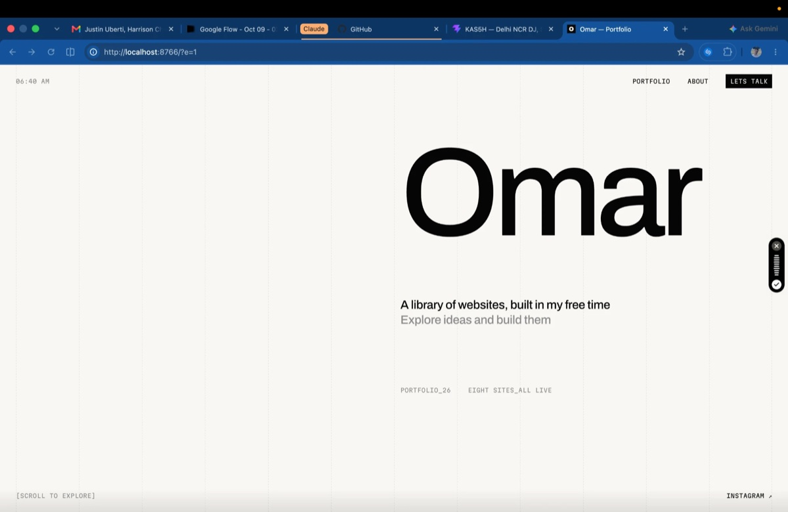

Hey, I'm
Omar
This is what I do: in my free time I build websites,
applications and a lot of other things
[Scroll to explore]
Instagram↗LinkedIn↗Email↗
Eight sites_All live
Websites[008]

About_Omar
I explore ideas and build them into websites
In my free time I take an idea and turn it into a live site, designed, built and launched with AI, finished properly at the highest level. Got an idea? Let me know, and let's build it together.
Commodity trading_Real estate_A festival_Two DJs_A voice agent
Currently working on_KAS5H
What I'm building right now
Open the site ↗Contact
Get in touchI'm ready to build anything
Message me on Instagram
Instagram↗LinkedIn↗Email↗
©2026_Designed by Omar